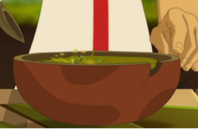

Mossy soup!

Supper time now and the recommendation of Chef Scratch is to skip this meal if you plan to loose some fat.
However if you are not into the hardcore fitness game but still want to eat a "guilt free" supper, this delicious treat will be a good option for you!
Ingredients
This earthy meal has some local ingredients but the most important one has to be imported from the rest of the non freezed world. We are talking about The Moss
- 4 pounds of live moss
- 5 pounds of soil
- 2 tablespoons of salt and pepper
- Penguin barf (It has to be from a penguin that has eaten a lot of krill)
- 64 ounces of water
Preparation
- First you want to mix all of the dry ingredients at once and quickly before the moss starts dying. It has to be fresh, if not they loose all of the flavor. You let the mix sit for 20 minutes
- While the mix starts puffing up you can start boiling the water
- If the moss is all inflated then that's the sign that the dry mix is ready, so now you can give it a slap and then pour it into the boiling water
- Let it boil untouched for 10 minutes and then slowly add the penguin barf (This will add a lot of protein and umami flavor to the soup)
- Stir constantly for 30 minutes
- Enjoy!
You can click on Chef Scratch little helper to return to the main page!